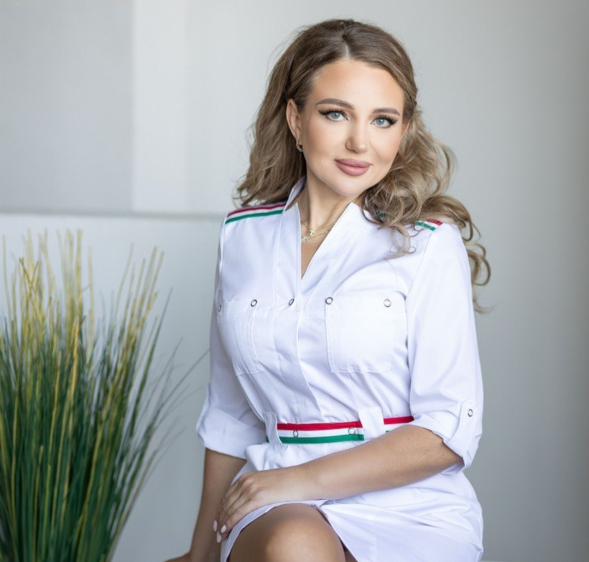
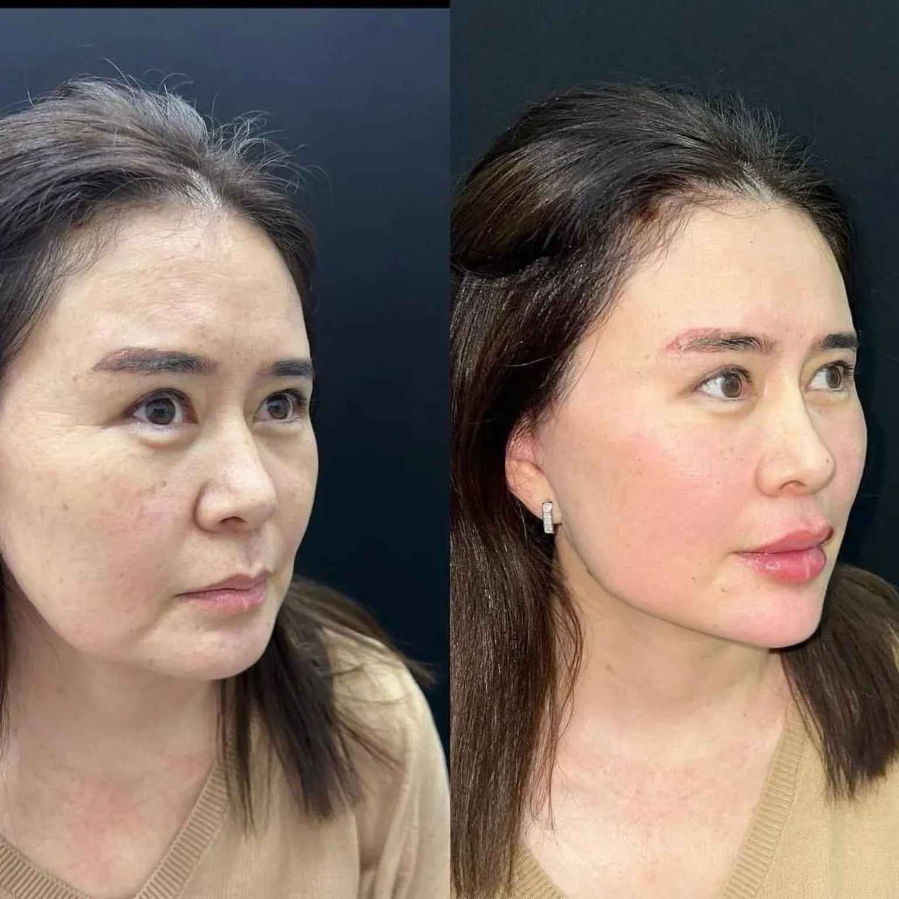
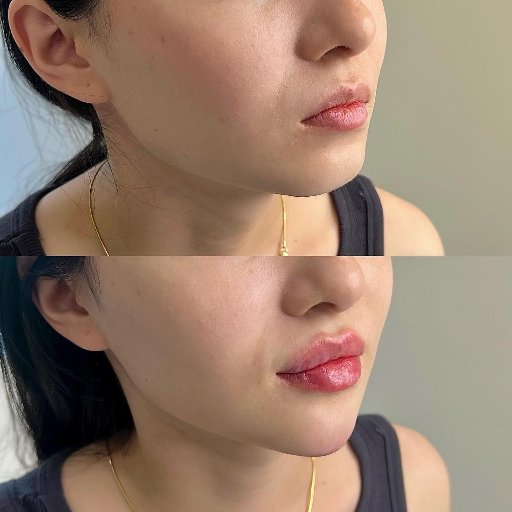
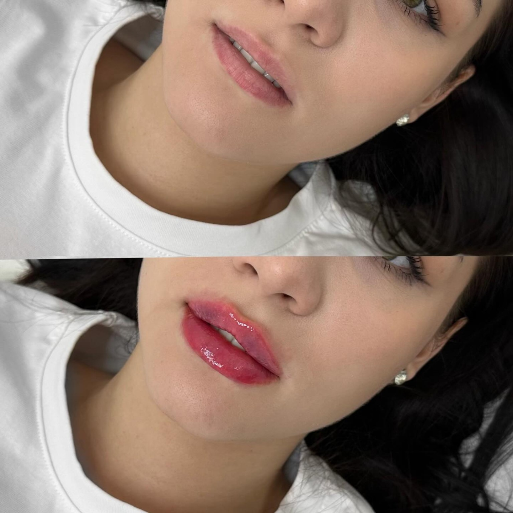
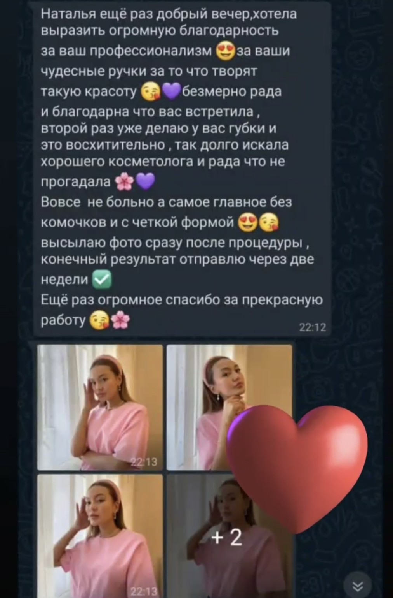
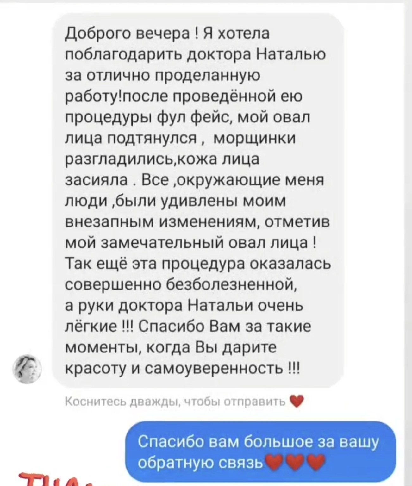
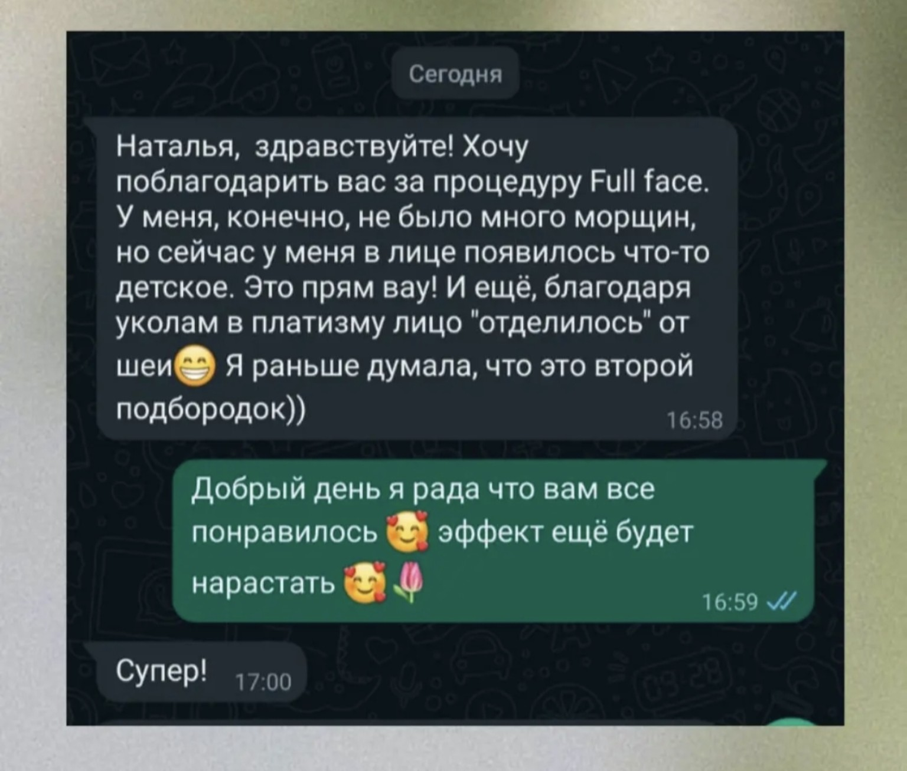
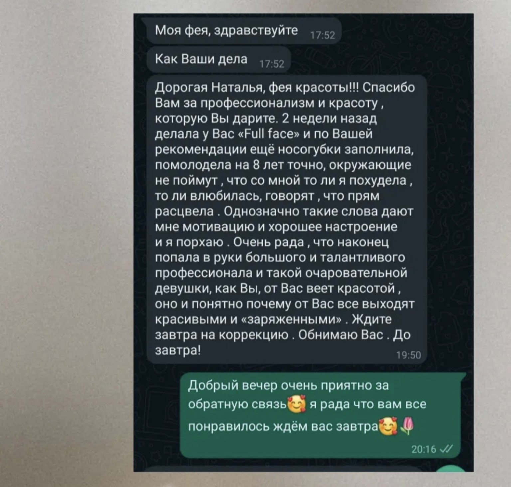
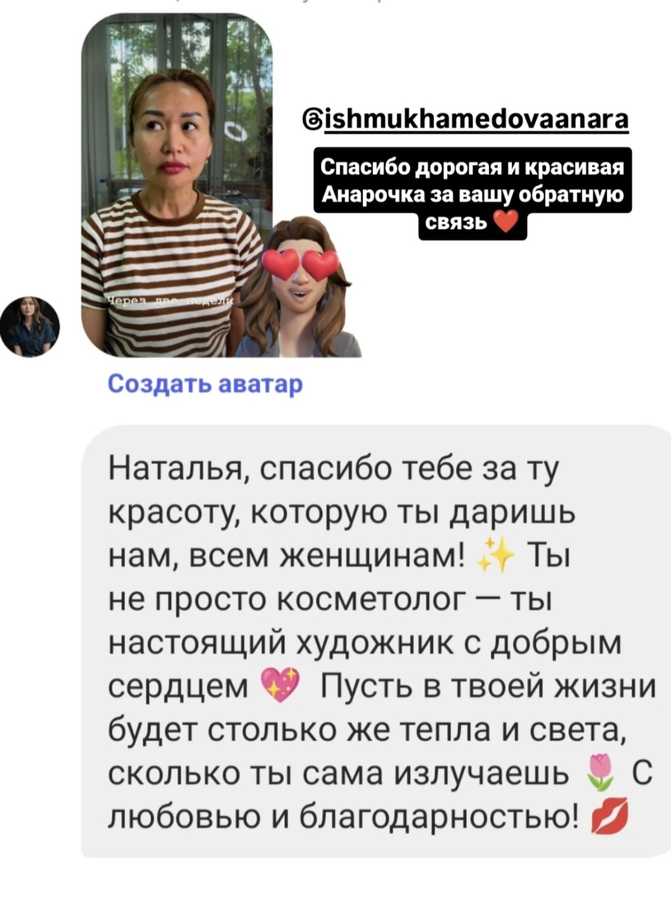

01 / ГУБЫ
Контурная пластика губ
Обсуждение желаемой формы и пропорций на предварительной консультации.
Эстетическая косметология и индивидуальный подход. Подберём процедуру после консультации с учётом ваших пожеланий и показаний.
Подробности, стоимость и возможность проведения процедуры уточняются на консультации.
Обсуждение желаемой формы и пропорций на предварительной консультации.
Процедуры для ухода за кожей после оценки состояния и противопоказаний.
Возможные варианты коррекции обсуждаются индивидуально.
Индивидуальная оценка показаний и противопоказаний на консультации. Возможность проведения процедуры определяется специалистом.
Подходящий метод коррекции и ожидаемый результат обсуждаются индивидуально на консультации.
Комплекс может включать следующие процедуры:
Состав комплекса подбирается индивидуально после консультации и оценки показаний и противопоказаний.
Ответы на вопросы и рекомендации специалиста.

Перед процедурой специалист уточняет пожелания, оценивает показания и противопоказания и объясняет возможные результаты и риски.
Здесь размещены фотографии результатов процедур, а отзывы пациентов находятся в отдельном разделе ниже. Результаты индивидуальны.



Перед публикацией проверьте наличие согласия клиентов на размещение фотографий и соответствие подписей реальным процедурам.
Спасибо за доверие и тёплые слова. Каждый результат индивидуален и зависит от особенностей пациента.





Перед публикацией убедитесь, что у пациентов есть согласие на размещение переписки, фотографий и любых данных, по которым их можно узнать. При необходимости скройте имена, аватары и никнеймы.
Постоянный приём в Астане. В Алматы — выездной приём один раз в месяц; даты уточняйте при записи.
Оставьте контакты — мы свяжемся с вами и уточним детали записи.